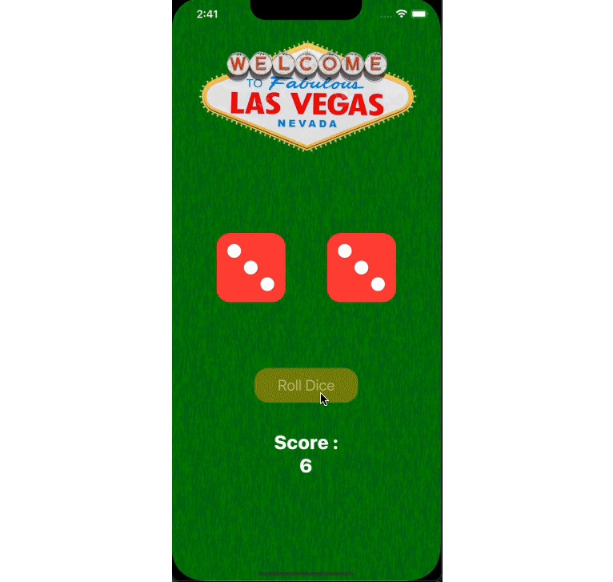

During this iOS application development workshop, I learned Swift UI and its application in creating iOS apps.
The workshop also taught me Storyboard UI and various beautification features present in Xcode.
I created two projects under this workshop: 1. A Dice Roll App 2. Setting App
I participated in my first Hackathon - DEVSOC conducted in June 2023.
My teammates and I worked on the idea of launching a non-profit pet adoption website where people can adopt their choice of animal.
The website also provided information on the animals' health conditions and mentioned any disabilities if present.
I have delved into the subject of Web Scraping with Python's Beautiful Soup Module.
I worked on a small project regarding solar power generation data, fetched the data with Web Scraping, and analyzed it.
Furthermore, I learned the basics of MySQL to organize the data.